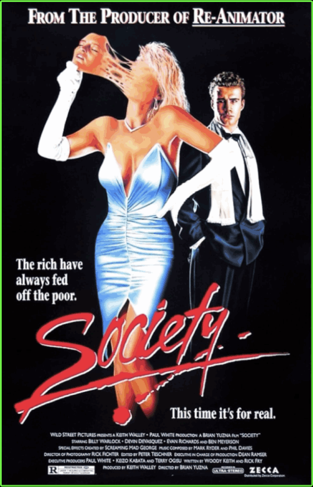

“Society” (1989) is a surreal body-horror satire about class, corruption,
and privilege. Famous for its shocking finale, known as “The Shunting"
it mixes practical effects, dark comedy, and grotesque visuals.
Fun Facts:
• Directed by Brian Yuzna, producer of Re-Animator and director of it's sequel "Bride Of Re-Animator".
• The special effects were created by Screaming Mad George.
• The film was praised in the UK but was recieved negatively in the US